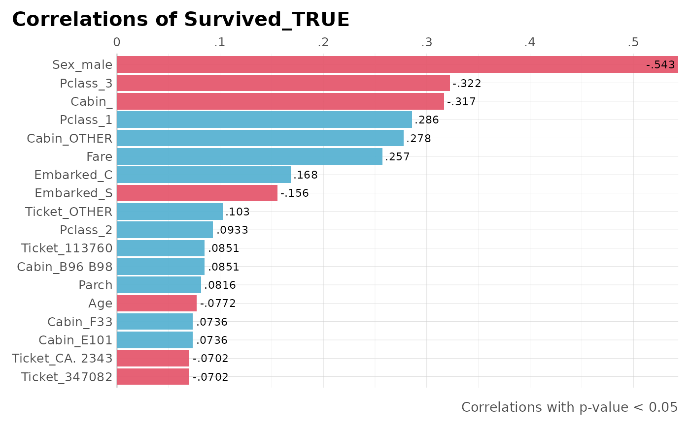

This function correlates a whole dataframe with a single feature. It
automatically runs ohse (one-hot-smart-encoding) so no need to input
only numerical values.
corr_var( df, var, ignore = NA, trim = 0, clean = FALSE, plot = TRUE, top = NA, ceiling = 100, max_pvalue = 1, limit = 10, ranks = FALSE, zeroes = FALSE, save = FALSE, quiet = FALSE, ... )
| df | Dataframe. It doesn't matter if it's got non-numerical columns: they will be filtered! |
|---|---|
| var | Variable. Name of the variable to correlate. Note that if the
variable |
| ignore | Character vector. Which columns do you wish to exclude? |
| trim | Integer. Trim words until the nth character for categorical values (applies for both, target and values) |
| clean | Boolean. Use lares::cleanText for categorical values (applies for both, target and values) |
| plot | Boolean. Do you wish to plot the result? If set to TRUE, the function will return only the plot and not the result's data |
| top | Integer. If you want to plot the top correlations, define how many |
| ceiling | Numeric. Remove all correlations above... Range: (0-100] |
| max_pvalue | Numeric. Filter non-significant variables. Range (0, 1] |
| limit | Integer. Limit one hot encoding to the n most frequent
values of each column. Set to |
| ranks | Boolean. Add ranking numbers? |
| zeroes | Do you wish to keep zeroes in correlations too? |
| save | Boolean. Save output plot into working directory |
| quiet | Boolean. Keep quiet? If not, show messages |
| ... | Additional parameters passed to |
data.frame. With variables, correlation and p-value results for each feature, arranged by descending absolute correlation value.
Other Exploratory:
corr_cross(),
crosstab(),
df_str(),
distr(),
freqs_df(),
freqs_list(),
freqs_plot(),
freqs(),
lasso_vars(),
missingness(),
plot_cats(),
plot_df(),
plot_nums(),
tree_var(),
trendsRelated()
Other Correlations:
corr_cross(),
corr()
Sys.unsetenv("LARES_FONT") # Temporal data(dft) # Titanic dataset corr_var(dft, Survived, method = "spearman", plot = FALSE, top = 10)#> Warning: Maybe you meant one of: 'Survived_TRUE'#>#> Warning: Not a valid input: Survived was transformed or does not exist.#> variables corr pvalue #> 3 Sex_male -0.543351 1 #> 7 Fare 0.323736 1 #> 10 Pclass_3 -0.322308 1 #> 22 Cabin_ -0.316912 1 #> 8 Pclass_1 0.285904 1 #> 32 Cabin_OTHER 0.277835 1 #> 34 Embarked_C 0.168240 1 #> 36 Embarked_S -0.155660 1 #> 6 Parch 0.138266 1 #> 20 Ticket_OTHER 0.102598 1# With plots, results are easier to compare: # Correlate Survived with everything else and show only significant results dft %>% corr_var(Survived_TRUE, max_pvalue = 0.01)#> Warning: There are not enough observations to plot. Check your 'max_pvalue' input#> [1] variables corr pvalue #> <0 rows> (or 0-length row.names)# Top 15 with less than 50% correlation and show ranks dft %>% corr_var(Survived_TRUE, ceiling = 60, top = 15, ranks = TRUE)#>